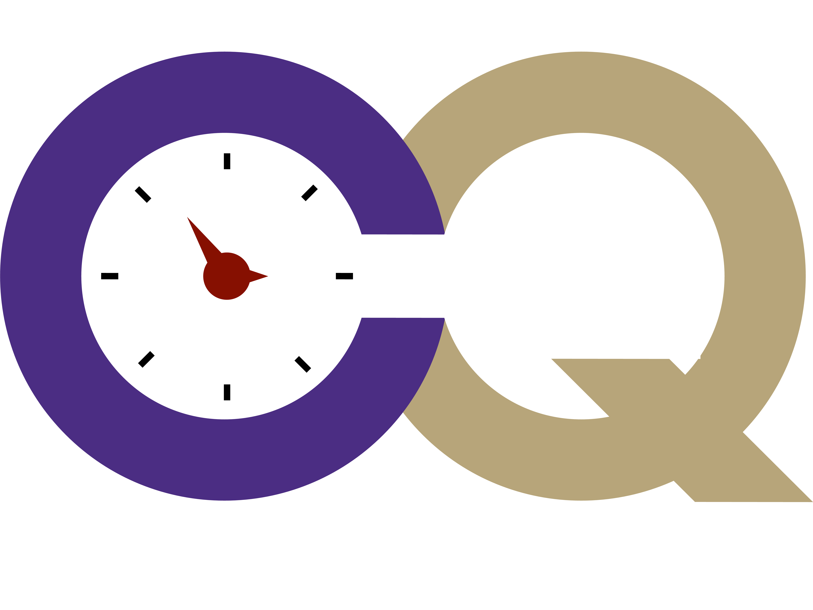

Software

Chronus Quantum
is an ab initio computational chemistry software package
that focuses on explicitly time-dependent and unconventional post-SCF
quantum mechanical methods.
Through this SciDAC partnership, we are developing time-dependent and relativistic
formulations of the equation-of-motion coupled-cluster and
multireference configuration interaction methods in Chronus Quantum,
and we are designing our codes such that they can be deployed in massively-parallel computing environments.
To this end, our codes rely on the scalable tensor framework TiledArray.